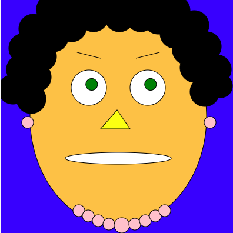
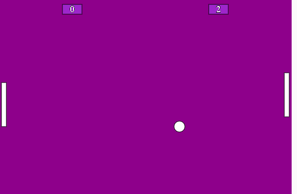

Olá, me chamo Laryssa_
const sobreMim =
{
idade: "17 anos",
cidade: "São Paulo",
anoEscola: "3º ano do Ensino Médio",
projeto: "Alura Start de programação",
objetivo: "Cursar Ciência da Computação na USP"
};
Minhas Habilidades_
Meus Projetos_

A observadora
Projeto realizado no curso Alura.
Ao movimentar o mouse, as pupilas da personagem acompanham

Jogo Pong
Projeto realizado no curso Alura.
Dois jogadores usam barras para rebater uma bola.
Se a bola passar por sua barra, o outro ganha ponto.